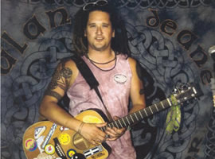
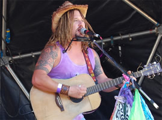

The Belfast Busker
The Belfast Busker
The Belfast Busker (07989430986)
www.newgrainmusic.com
Alan Deane left the green shores of Ireland in 1987 with a battered old acoustic guitar and a handful of old folk songs. After a few years travelling here and there, he ended up in the wonderful county of Cornwall, where in the early 90's he started playing in the old country pubs around Newquay singing his songs whilst the hat was passed around.
He has been on the road ever since doing what he does best, breathing new life into traditional old Irish favourites, mixed in with a bit of British and American folk-rock ; the songs of Donovan, Lindisfarne, Bob Dylan and Neil Young along with a tune or two from more recent times, the likes of Oasis, U2 and The Levellers.
Wild Irish Rover
Alan is still going strong today, performing gigs all over the south west. He has many popular CD's currently released under the "Newgrain Music" label.
Alan is also a firm believer in keeping music live and he does so with himself (which he counts as an instrument), his acoustic guitar, his harmonica and an old microphone wrapped up in a beer towel which he tapes to the floor and taps with his foot for a Bodhran effect.
So come along, get a few pints down yer neck, have a laugh and a good old sing-a-long and you never know - you might just enjoy yourself. As Alan says "I'm only as good as the crowd in front of me"
All the best, keep smilin' and Confuse the buggers!!
 |
 |
 |
|
text & images © Alan Deane